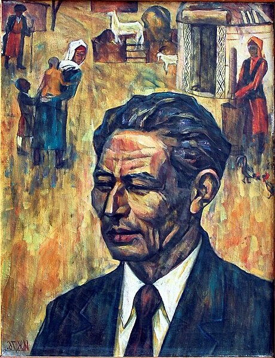

Stories
that stay with you

About the Author
Tilewbergen Jumamuratov was born on December 27, 1915, in the village of Aqdarya, Russian Empire, into a peasant family. He became an orphan early and, thanks to his mother's efforts, first studied at a madrasa, and later at an educational institution in the city of Aralsk in 1931–1932. In 1936–1937, he studied at teacher training courses in the city of To'rtko'l.
From a young age, Tilewbergen Jumamuratov wrote poetry. He was a poet with a gift for improvisation. He was one of the last improvisational poets who preserved the traditions of Karakalpak oral folklore. Tilewbergen Jumamuratov stood out for his unique style of expressive recitation, performing even his major works from memory.
"The world's a vast, unbounded sea. Though storms and grief I've met,
I've weathered much — yet still no shore, no solid ground as yet."
Photo: author's archive
"Author's Books"
Literary Journal
Contact Us
For Publishers
karsu@gmail.com
Agency: Yosh Tarjimonlar